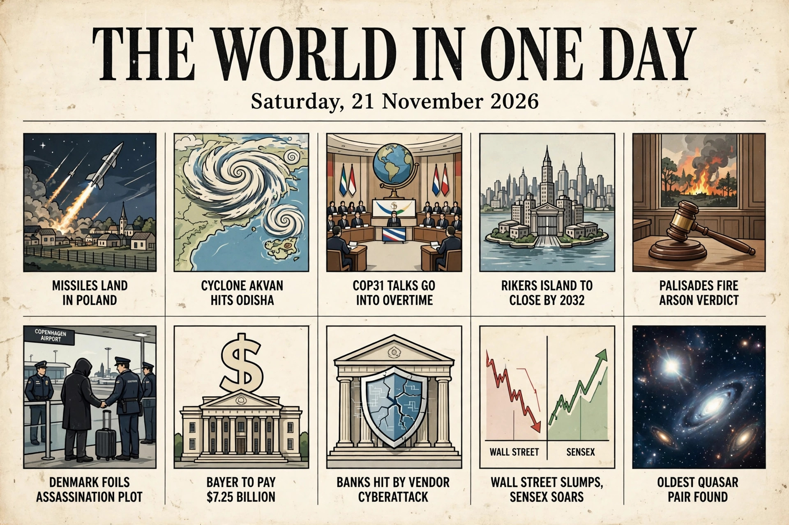

THE WORLD IN ONE DAY
Saturday, 21 November 2026

The ten stories of 21 November 2026
- Missiles land in Poland. Two Russian missiles and a suspected drone came down in Poland during a bombardment of Ukraine; Warsaw called it a deliberate provocation and NATO called it a grave violation of allied airspace.
- Cyclone Akvan hits Odisha. Cyclonic Storm Akvan crossed India's east coast near Gopalpur, bringing strong winds and heavy rain.
- COP31 talks go into overtime. Fossil-fuel talks deadlocked at the UN climate summit in Turkey, pushing negotiations past their scheduled close.
- Rikers Island to close by 2032. New York Mayor Mamdani announced a plan to shut the Rikers Island jail complex by 2032.
- Palisades Fire arson verdict. A Los Angeles jury convicted Jonathan Rinderknecht of starting the fire that became the deadly 2025 Palisades Fire.
- Denmark foils assassination plot. Danish authorities said a Russian plot to assassinate US-Ukrainian rapper Kyivstoner was foiled.
- Bayer to pay $7.25 billion. A judge approved a $7.25 billion Bayer payout to settle claims that Roundup causes cancer.
- Banks hit by vendor cyberattack. JPMorgan Chase, Visa and Mastercard reported cybersecurity incidents involving third-party vendors; core payment networks were unaffected.
- Wall Street slumps, Sensex soars. US stocks fell about 3.7%, the S&P 500 entering correction as AI shares sold off (Nasdaq down 5.28%, Nvidia about 14%); India's Sensex rallied nearly 898 points the same day. Gold fell to a 14-month low.
- Oldest quasar pair found. The Webb telescope and Gemini North discovered the oldest known close quasar pair.